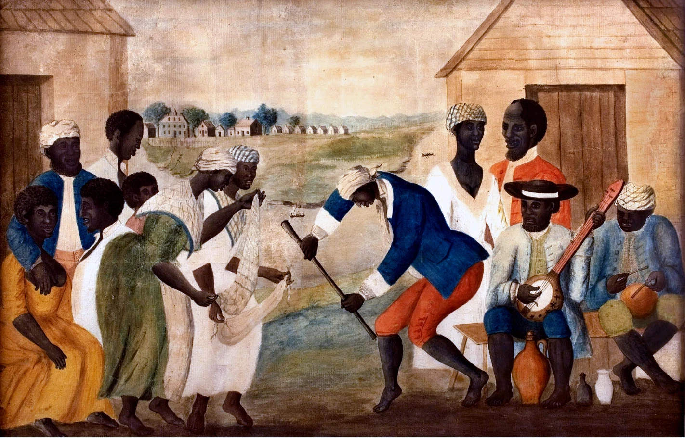

Afrodescendants
in American Colonial Art
FEATURED WORKS
ABOUT THE EXHIBITION
This virtual exhibition explores how Africans and their descendants were represented in colonial American art and the spaces they came to occupy in viceregal society. Their presence in colonial painting was far from marginal. Yet the images that portray them are not faithful records of reality but constructions shaped by the ideals and anxieties of those who commissioned and produced them. Casta paintings in particular celebrated mestizaje while reinforcing a hierarchy based on skin color and calidad. Archival sources, by contrast, reveal enslaved and free people working in households, markets, and workshops, joining guilds, militias, and confraternities, and in exceptional cases achieving recognition.
Through four sections (casta paintings, secular scenes, religious images, and portraits) and two routes, one general and one specialized, the exhibition invites visitors to look critically at these works.It asks them to recognize both the colonial gaze that produced the works and the presence of those who, within an order shaped by slavery, negotiated their place in the viceregal world. Through four sections (casta paintings, secular scenes, religious images, and portraits) and two routes, one general and one specialized, the exhibition invites visitors to look critically at these works. It asks them to recognize both the colonial gaze that produced the works and the presence of those who, within an order shaped by slavery, negotiated their place in the viceregal world.
Nonetheless, colonial paintings include figures (particularly in the middle and background) whose inclusion itself demonstrates the social fluidity of a world shaped by movement, settlement, and relocation. Historically, figures of Africans and their descendants in Latin American colonial art have received limited interpretive attention. This marginalization extends beyond mere compositional hierarchy, reflecting broader assumptions that naturalized slavery as the expected condition of Black individuals in colonial society. Recent scholarship, however, has begun to challenge these views, highlighting the diverse roles of Black people, from military or commercial positions to artistic production,3 and stressing the need to reconsider their visibility and significance within colonial visual culture.
- 1. Kathryn Santner and Helen Melling, "Introduction: Visualizing Blackness in Colonial Latin America," Colonial Latin American Review 30, no. 2 (2021): 186. https://doi.org/10.1080/10609164.2021.1912477 .
- 2. Jaime Borja, Los ingenios del pincel: Geografía de la pintura y la cultura visual en la América colonial, 1.ª ed., Colección Ágora. Historia y Geografía (Bogotá: Ediciones Uniandes; Facultad de Artes y Humanidades, 2021), https://doi.org/10.30778/2020.07 .
- 3. Juan Correa (1647–1717) and his student José de Ibarra (1685–1756) were two of the most prominent painters in colonial Mexico City, and both were of African descent.
Colonial art reveals that the history of Afro-descendant people is far more complex and diverse than traditional narratives have told us.
Chief Curator